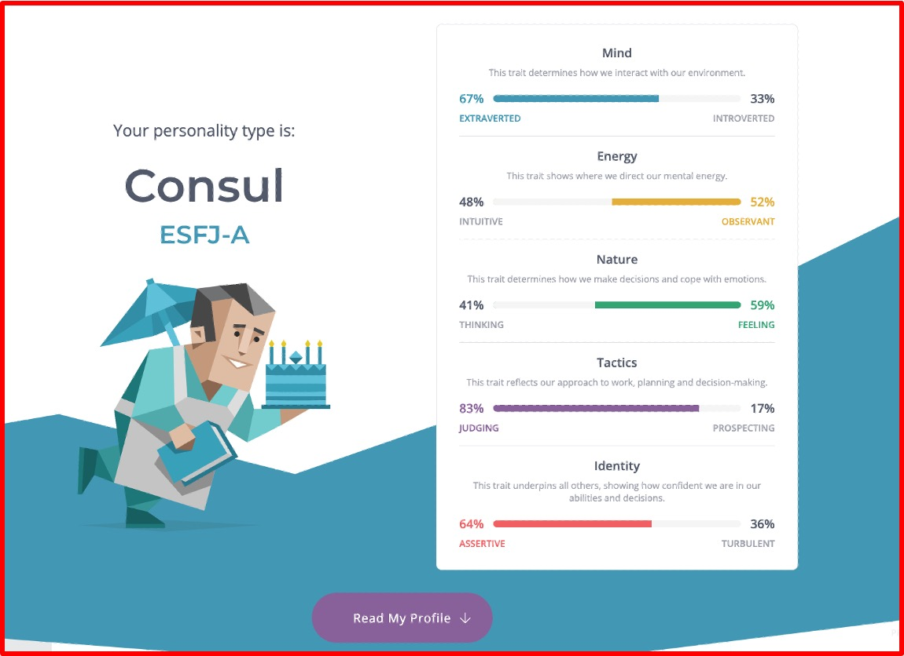

Welcome!!
Thank you for taking the time out of your day for visiting my Profile. Hope you enjoy my profile and hope you have a good day!!
Personal Information
Name: Navdeep Singh Ghuman
Student Number: s3944633
Email Adress: navdeepsingh20032063@gmail.com
My name is Navdeep Singh Ghuman, I prefer to go by the name Nav. I was born and raised in India and came to Australia permanently in late 2015 to continue studying. I come from the northern India, from the state that is called Punjab. At home the most spoken language would be Punjabi, and English as well, but Punjabi would dominate. Growing up I always wanted to be a part of aviation, being a pilot in either the air force or being a commercial pilot for any airline company. But one day in my elective class, I was taught coding (HTML, CSS and JavaScript), ever since I have fallen in love with coding and amazingly how it runs our computers and technology overall. In my free time I like to hit up the gym, play a lot of Basketball, take part in Muay Thai and boxing. Another interesting fact about me would be that I use to be a Sue Chef in a professional restaurant, working under my mother who was a Head Chef in that workplace.
Interest in IT
Interest's in IT, Outlining IT experience and IT related fun facts about me!!!
My interest in IT is software engineering, learning how to create and run software. My interest in IT started in an elective class in year 10 where I learned basic coding languages such as HTML, CSS and JavaScript. A teacher by name of Diego Hazikosta is an individual who I will never forget as he was the man who sparked my interest in IT. I have fair bit of experience in coding languages such as HTML, CSS and JavaScript, as those were the languages I learnt during my elective in year 10.
Reason why I chose RMIT
This is due to RMIT being an extremely good university regarding technology. Whenever anything to do with Information Technology comes up, the conversation cannot end without mentioning RMIT. My friends who attended/attend RMIT recommended RMIT if I desired to do a degree regarding technology. Additionally, he campus in City was extremely close and easy to get to. Lastly, a lot of close friends who I graduated with were going to RMIT.
What I expect to learn during my studies
I anticipate to gain experience and learn various aspects in the Information Technology industry. I expect to learn what it takes to step into the Technology world and how it is to manage and make your way around the Technology industry. Having the ability to do different subjects in my course allows me to step into unusual aspect of the IT world and experience it well.
Ideal Job
Job Title and Description
Looking at the knowledge and experience the job requires, the HTML, CSS and JavaScript knowledge, it appeals to me as a fair amount of experience and understanding of the three programming languages. I think what makes this job attractive to me is the ability to work in a collaborative environment, where group work will have great amount of collaborative work. Link to my ideal job- https://www.seek.com.au/job/56205860?type=promoted#sol=f3e07beb75a1b47dd0bb57eba7d46104bfa2700d

Skills I Need
A few skills which are required include: working collaboratively, proactively, professionally with others, take on responsibility, finishing allocated task before a deadline/timeframe and establish a high degree of technical product expertise, focusing on MAGIQ Cloud Product Suites in particular. The job requires knowledge and experience in HTML, CSS and JavaScript, databases such as MySQL and/or MS SQL, automated CI/CD Release Pipelines and modern UI Frameworks AngularJS or React. This job requires immense amount of experience in programming language which were listed above, which I think reasonable as those are mostly used when working as a software engineer.
Skills I Have
At the moment I have a sufficient quantity of experience in programming languages such as HTML, CSS, JavaScript, Python. Additionally, I have the ability to operate the database management system MySQL and SQLite Studio. I think I need to work tremendously hard learn a few of these languages as this job is a very ideal job form, but I am willing to learn and work hard to get this job.
Learning Plan
My plan (at the moment) is to obtain my current degree, Bachelor of Information technology, and then proceed onto doing a Master’s of Information Technology at University Of Melbourne. Additionally, while I will be doing my Master’s, I will be looking for jobs which offer experience alongside allowing me to study. As the Master’s degree assures me that I will be able to step into the Software Engineering field without a uncertainty.
Personal Profile
What the test's means to me
The results from these three tests hold a significant value for me as an individual. As the results present my personality, my personal traits and how I am as a human being. Knowing what type of a human I am, I think assists me in refining my flaws which I may not acknowledge in the outside world.
How I think the results influence my behaviour in a team
I think by overlooking these results, my behaviour will be heavily influenced. As these results showcase to me what lacks regarding my personality, hence I will be able to mend on them in a team environment, as it’s essential to have good habits and traits when it comes to working with a team.
How I take the results in account when forming a team
I think teaming up with people who have similar vision and personality traits will go a long way when it comes to team success. If the other team members, including me, know their flaws and how to improve them, the likeminded mentality can assist in the team being successful in any aspect of life.
Myers-Briggs Test
Learning Style test

Big Five Personality Test

Project Idea
Overview
My project is about mixing an existing game called Angry Birds with mathematics. The project is all about using regular math, referring to common math, and using it to figure out angels to successfully complete the angry birds game.
Motivation
As in year 11 and 12 I fell in love with mathematics, as I did Math Methods and Specialist Methods. More specifically in both of those mathematics, we learned a lot about angels, parabolas and vectors, which all relate to angel of release, height of release and speed of angel. Additionally, the SAC (like a test in VCE) for the topic parabolas and vectors, I received the highest marks in my class, which was 92%. Ever since, my motivation to explore parabolas and vectors in greater and further depth has appreciated a lot. Additionally, as Angry Birds is a world-widely game and is played by 200 million people monthly, it would be a good idea to flip the idea and add my own twist on it by adding mathematics in it.
Description
This project will include the game Angry Birds and mathematics. When someone casually and normally plays Angry Birds, that individual has a few birds (meaning a few tries) to knock down what’s displayed on the screen, meaning that they would have to be concise with the angle and height they release the bird at. The game helps the individual by showcasing the path the bird will be released at, which the individual has the option to change and manipulate. Having certain amounts of tries to complete the level successfully, the individual has to be extremely conscious in choosing the angle of release, hence making it hard to complete the level successfully.
Tools and Technologies
As in year 11 and 12 I fell in love with mathematics, as I did Math Methods and Specialist Methods. More specifically in both of those mathematics, we learned a lot about angels, parabolas and vectors, which all relate to angel of release, height of release and speed of angel. Additionally, the SAC (like a test in VCE) for the topic parabolas and vectors, I received the highest marks in my class, which was 92%. Ever since, my motivation to explore parabolas and vectors in greater and further depth has appreciated a lot. Additionally, as Angry Birds is a world-widely game and is played by 200 million people monthly, it would be a good idea to flip the idea and add my own twist on it by adding mathematics in it.

As it can be seen in the picture above, the white dotted line exhibits the path of the bird. It can be extremely difficult for an individual to figure out the perfect angle of release with using a minimum number of birds (tries). To minimise the tries it takes a person to successfully complete a level and therefore saving their time spent on the game, a computer-generated program will assist the individual with releasing the bird at a perfect angle. Before they attempt a throw, they would have to solve computer generated equation in order to get an answer which will have an angle to which the bird should be released, in order to complete the level with minimalism. Before the player gets to the screen where he or she plays the game, beforehand they would have to solve a simple equation, which would involve simple mathematics such as basics of parabola, vectors and trigonometry. The angel would appear right on top of the bird and until the angel has been found by moving the finger around the screen, the attempt would not activate and release the bird. As the levels become harder in difficulty, the equations/problems would become much harder, as the equations are intended to make the level easier to complete. When a player moves the bird up and down, a degree will appear on top of the bird which has to be matched to the degree which was gained by solving the equation/problem. The degree is a suggestion, if the bird is released at that angle, the level can be completed with minimal tries, hence the player will gain more stars. The more stars an individual has in the game, they are able to use those stars in exchange for help, help in regards with the equation. The objective of creating a product such as this is to assist students to learn basics of trigonometry, vectors and parabolas. As I am so passionate about mathematics, though it would be actually a good idea to bring this idea to a game.
Skills Required
Skills required to successfully execute this project plan would include, having a good knowledge and understanding of the software used to create the games and drawing skills to draw/sketch mock-ups of how the game would appear as. If I decide to take on a challenge, such as programming my game, I will require immense skills in the most popular and commonly used programming languages for game designers, which would be C++, Java, HTML5 and JavaScript. It wouldn't be feasible getting access to software’s, as they cost money/subscription to use. Additionally, acquiring skills needed to program would be extremely difficult, as those programming languages are considered to be the hardest languages to learn and understand. Hardware is no big deal as I already have access to the required hardware.
Outcome
If the game is successful and does well around the globe, I think it may change many individual’s perspectives on mathematics, specifically individuals who don't like trigonometry. Building a solid base of trigonometry, parabolas and vectors would drastically change people’s process of learning those topics much easier and I guess more enjoyable and joyful, as spouse to them staring at a whiteboard while a teacher explains the equations. I personally think that this game will introduce the students with a brand-new idea in regards to learning the basics of one of the hardest topics to learn in Specialist Math and Math Methods.